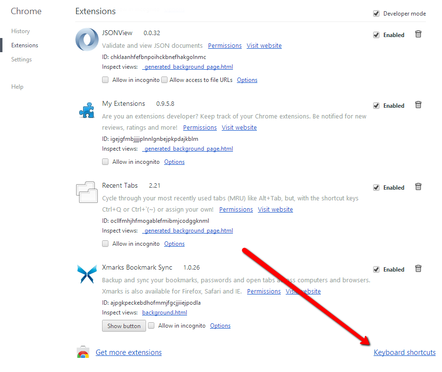

Keyboard Shortcuts
Popup specific
-
When the popup is visible, you can:
- navigate through the presets using the
Up&Downarrow keys and pressEnterto select one of the options; - use any of the numeric keys
0 - 9to resize to the appropriate preset in the list; - press
Eto edit the presets orSto edit the other settings.
- navigate through the presets using the
Global shortcuts
- Show/hide the extension's popup by pressing
<disabled> - Cycle through all your presets by pressing
<disabled> -
Please, PLEASE remember that any presets that would resize the viewport will only work on tabs that contain a page loaded using one of the following protocols:
http://,https://orfile:// - Due to Chrome limitations, developers are allowed to set suggested shortcuts for up to 4 commands. This is why you'll have to manually edit your shortcut keys before being able to use any of the global commands.
-
Use the link at the bottom of the extensions' listing page to edit the shortcuts
something like this
